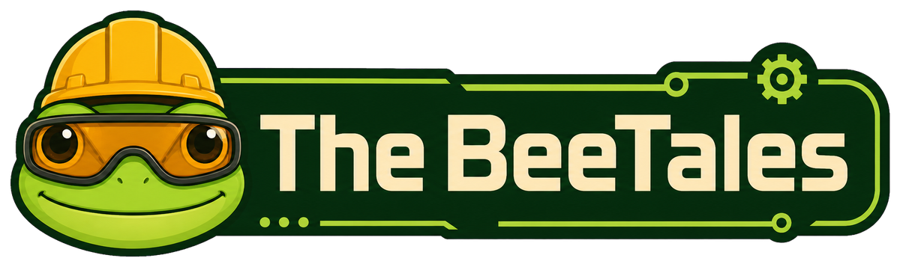
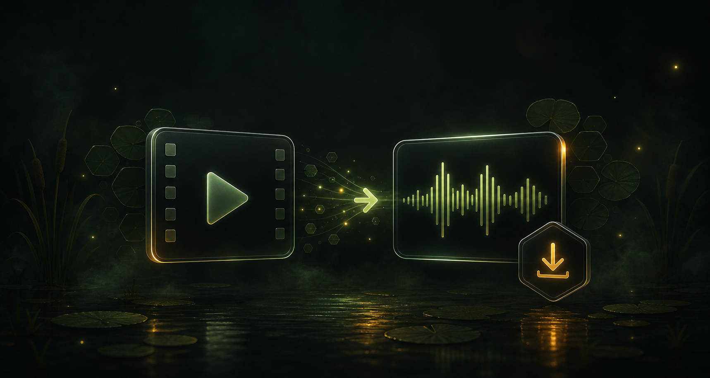

Media Converter
Extract audio, optimize MP4, or turn a video clip into GIF directly in your browser.
MP3
WAV
AAC
MP4
GIF
Private by design
Your files never leave this device. No uploads, accounts, or document server.
- 100% local
- No registration
- Browser only